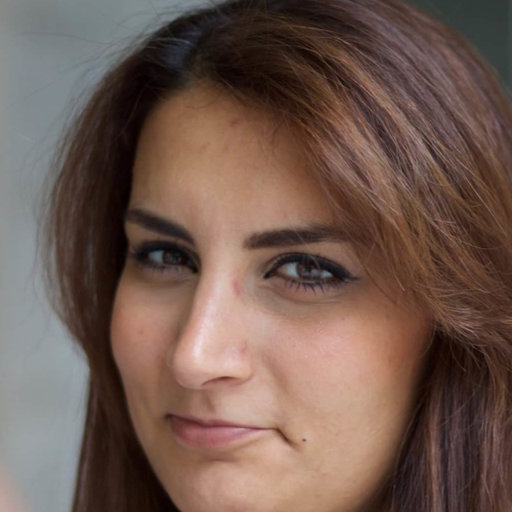
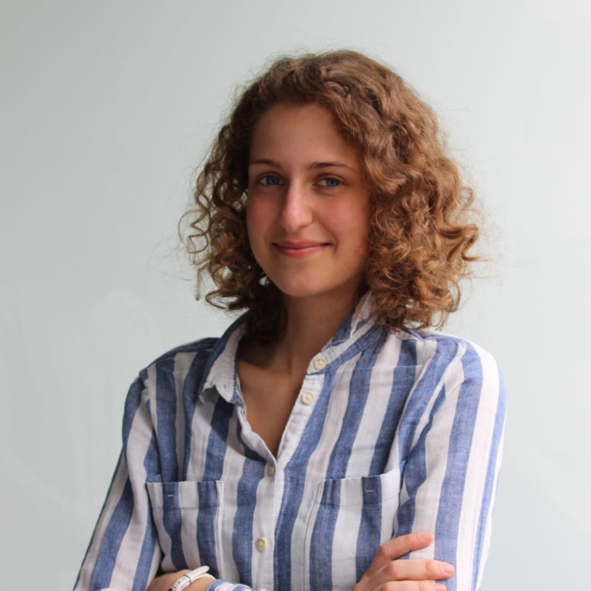
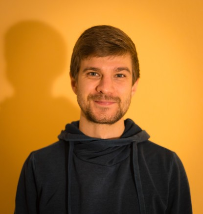
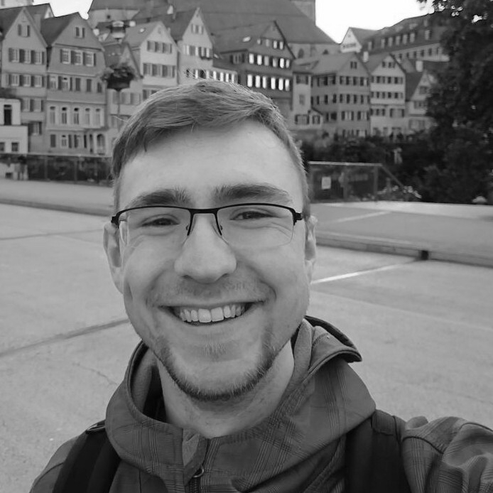

When and Where?
Dates: 5th to 9th of September, 2022
Location: Tübingen, Germany
The organizers.
|  |
Sara Al-Rawi |
|
Jannis Born |
|  |
Alessa Grund |
|  |
Philipp Hummel |
|
Jan Kirchner |
|  |
Tobias Ludwig |
|
Lukas Vogelsang |
|
Nina Wiedemann |
Our philosophy.
What is special about this event?
We think that educational events should be targeted towards conveying intuitive understanding as opposed to learning-by-heart. Do you remember the first time you learned about university level mathematics? Or the first time you had to wrap your head around nested for-loops and recursion? To gain any kind of understanding, you had to carefully follow the trail of logical inferences that a teacher or a book provided you – and sometimes that trail felt incredibly winding and stony. But once you have managed to follow through and reach an apex of understanding, you look back and see that there is a paved road leading up to where you are standing. Knowing about that paved road would have saved you a whole lot of trouble. And whenever you need to comeback to this particular apex, you are definitely going to take that shortcut. Knowing this shortcut means having an intuitive grasp of a topic and the importance of this is hard to overstate. But could you have learned about that shortcut before you started? We don't believe that we can show you that shortcut. Everyone approaches a topic from a different background and no intuitive understanding is universal. But we believe that a certain environment can help you to discover your shortcuts faster; an environment without unnecessarily cumbersome vocabulary, without false authority and with no wrong questions. We want to work with you to create that environment and to exchange ideas, concepts, and insights.
Why do we think that intuitive teaching is important in the brain and cognitive sciences?
We believe that the brain and cognitive sciences, where people with a diverse set of backgrounds collaborate, would benefit from this format in particular. In order to communicate research across disciplines, one needs to go beyond the notational quirks particular to its own specialization and develop a common vocabulary and understanding. At the IICCSSS, we want to bring together a diverse set of students and young researchers interested in computational approaches to brain and cognitive sciences in the hope of sparking interdisciplinary collaborations and bringing the manifold subfields of brain science closer together.
Why do we need this course and what is it about?
Cognitive science is an interdisciplinary field of study, concerned with providing functional characterizations of cognitive processes. It draws heavily from the methodology and philosophy of neuroscience, which itself is a highly interdisciplinary field. Despite the large overlap between cognitive science and computational neuroscience, the exchange between the fields is hampered by diverging terminology and research methodologies. While cognitive science is mostly concerned with generating computational models to explain cognitive phenomena, the neuronal implementation of these models oftentimes remains underspecified. Computational neuroscientists, on the other hand, develop neurobiologically plausible models for isolated portions of cognition. The proximity to biology provides these models with substantial predictive power; a feature often lacking in models of higher cognition. However, their limited scope leaves unclear how they interact with other neural processes to form higher cognitive functions and the field is mostly lacking general frameworks to integrate insights. As the complexity of the human brain gives rise to multi-layered behavior and cognition, it seems essential to investigate it at its multiple levels of operation. An improved understanding of the interaction of multi-level mechanisms will allow us to better understand the human mind and will open up new ways of, for example, treating neurodevelopmental, neurodegenerative or psychiatric disorders.
Is this course designed for me?
This annual, five-day course is primarily designed for international graduates and MSc. level participants from fields such as Computational and Experimental Neuroscience, Cognitive Science and Psychology. However, researchers and students from all fields with an interest in computational approaches to the brain and cognitive sciences are warmly invited to join the event and contribute to an interdisciplinary atmosphere.